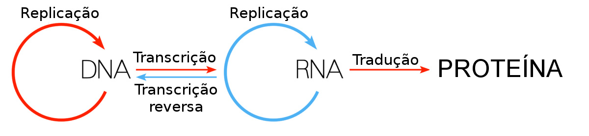

Biologia Molecular
Biologia Molecular é o estudo da Biologia em nível molecular, com foco na estrutura e função do material genético e seus produtos, as proteínas. É uma área que abrange também Química, Genética e Bioquímica.
Dogma Central da Biologia Molecular
O Dogma Central da Biologia Molecular foi postulado por Francis Crick em 1958, para explicar como ocorre o fluxo de informações do código genético. Esse modelo mostra que uma sequência de DNA pode formar uma proteína.
O fluxo ocorre da seguinte forma: o DNA, onde está contida a informação genética, é transcrito em RNA. Essa molécula de RNA, onde é encontrado o código da sequência de aminoácidos, é traduzida em proteínas.

Material de Apoio
Vídeos:
https://www.youtube.com/watch?v=oM0vpiTAwdk&t=2s - Dogma Central da Biologia
Leituras Recomendadas:
COX, M. M.; DOUDNA, J. A.; O’DONNELL, M. Biologia Molecular: Princípios e Técnicas. Porto Alegre: Armtmed, 2012
JAMES D. WATSON, et al. Biologia molecular do gene. 5a ed. Porto Alegre: ArtMed, 2006
ZAHA, A.; FERREIRA, H.B.; PASSAGLLA, L.M.P. Biologia Molecular Básica. 3a ed, Porto Alegre: Mercado Aberto, 2003